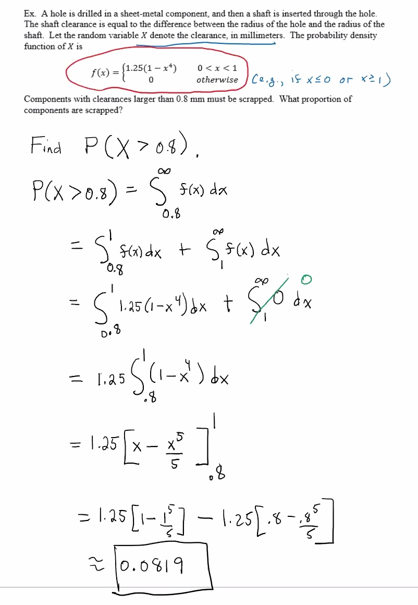
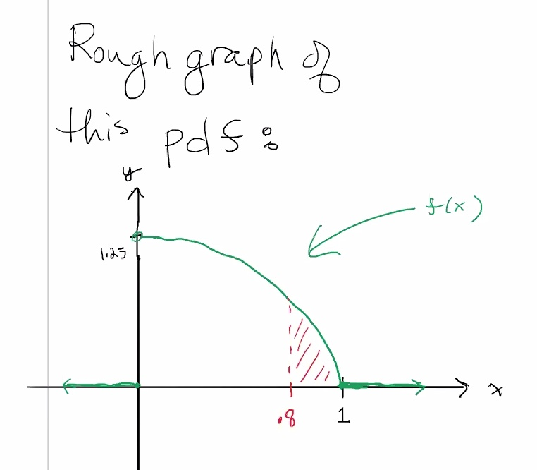
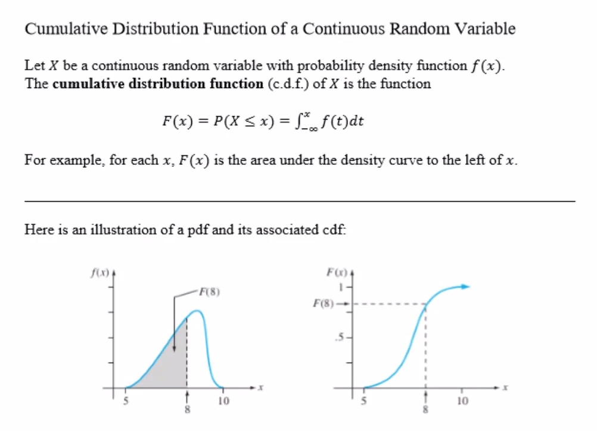
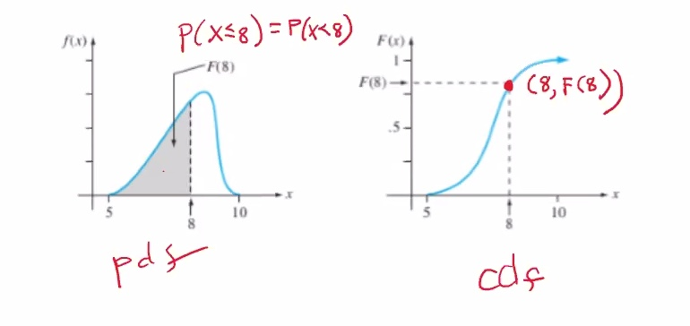
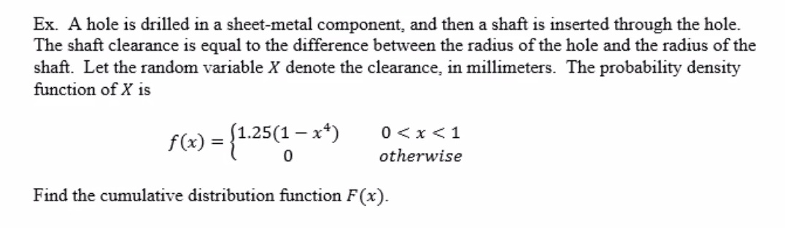
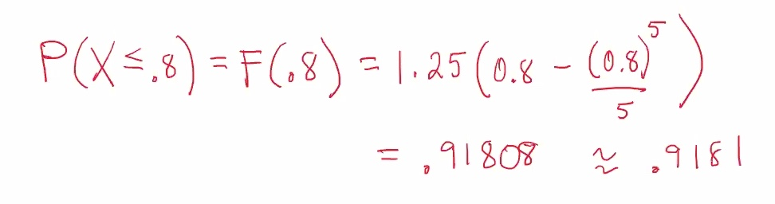
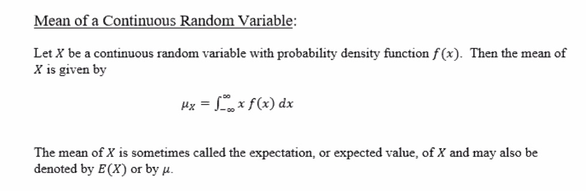
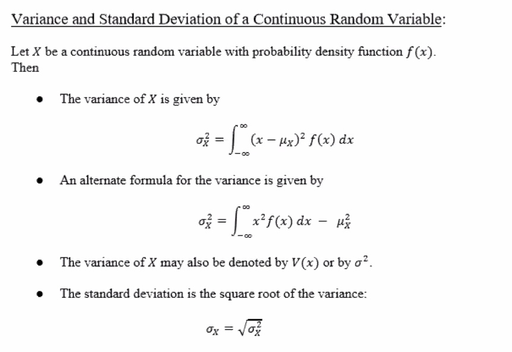
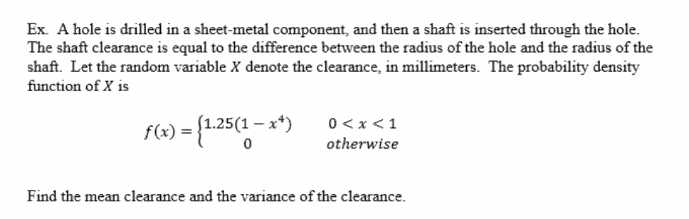

Annoucements
Probability density functions cont.


Cumulative distribution function


e.g.

We know:
F(x)=P(X≤x)=∫x−∞f(t)dt
Case 1: x≤0
F(x)=∫x−∞0dt=0
Case 2: 0<x<1
F(x)=∫x−∞f(t)dt=∫0−∞f(t)dt+∫x0f(t)dt=0+∫x01.25(1−t4)dt=1.25∫x01−t4dt=1.25[t−15t5]x0=1.25[(x−15x5)−(0−0)]=1.25(x−15x5)
Case 3: x≥1
F(x)=∫x−∞f(t)dt=∫0−∞f(t)dt+∫10f(t)dt+∫x1f(t)dt=0+∫101.25(1−t4)dt+0=1
The area under the entire cdf should be 1 by definition.
We can define our cdf as:
F(x)=⎧⎩⎨⎪⎪01.25(x−15x5)1x≤00<x<1x≥1

We can now use our piecewise function F(x) to calculate the probability:

Mean and variance for continuous random variables
Stat50 2.4 Mean and Variance for Continuous RVs.pdf


e.g.

Recall:
E(X)=μ=∫∞−∞xf(x)dx
So:
μ=∫10xf(x)dx=1.25∫10x(1−x4)dx=1.25∫10x−x5dx=1.25[12x2−16x6]10=1.25[12−16]≈0.4167
Lets find the variance:
V(x)=σ2=∫∞−∞x2f(x)dx−μ2=∫10x2f(x)dx−(.4167)2=∫10x2[1.25(1−x4)]dx−(.4167)2=1.25∫10x2−x6dx−(.4167)2=1.25[13x3−17x7]10−(.4167)2=1.25(13−17)−(.4167)2≈.0645mm2